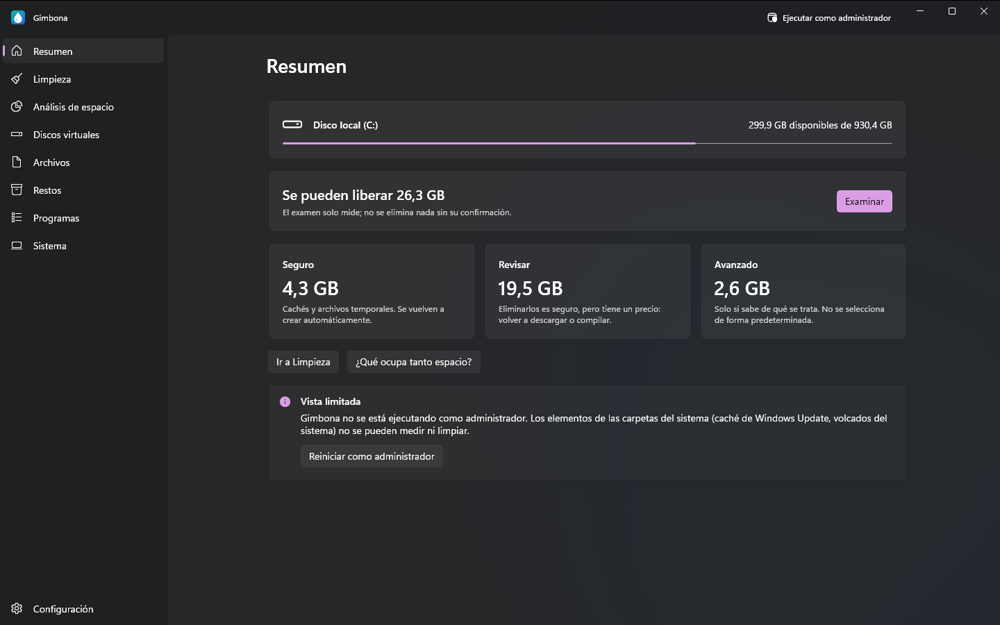
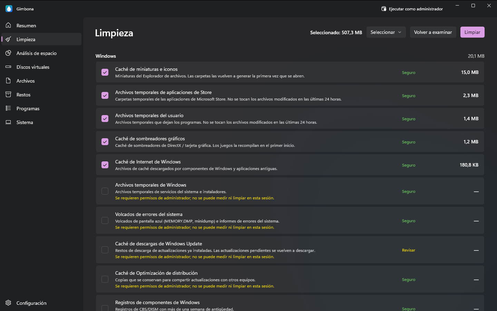
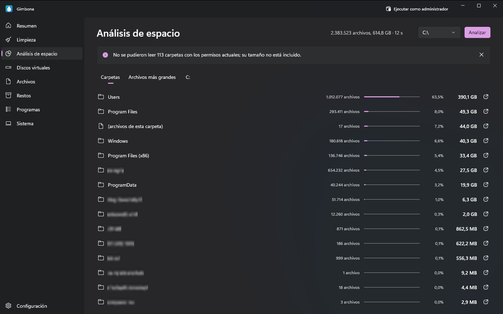
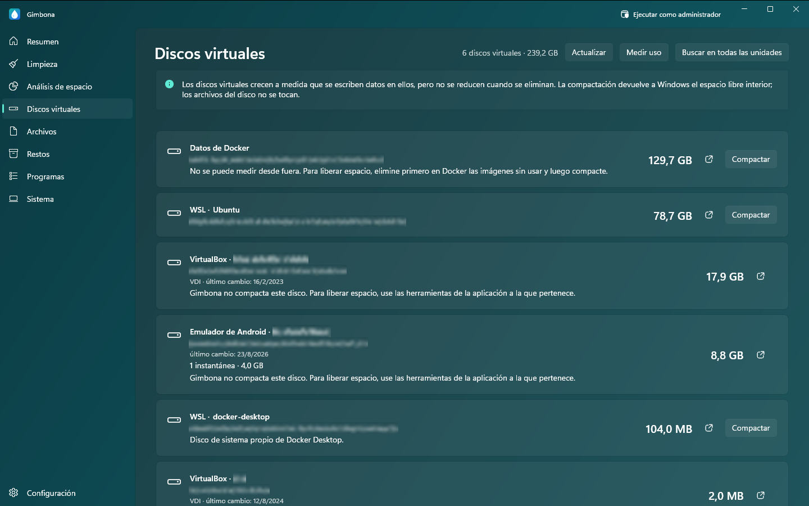

Liberar espacio en disco en Windows, de forma segura
¿El disco C está lleno? Gimbona muestra qué ocupa su unidad y le ayuda a limpiarla: archivos basura, archivos temporales, cachés, restos de Windows Update, archivos grandes y duplicados, programas que no usa y discos virtuales que no dejan de crecer. El análisis solo mide; nada se elimina sin su confirmación.
Descargar Gimbona en Microsoft StoreGratis para Windows 10 y Windows 11. Gimbona Pro es una compra única opcional, sin suscripción.




Características
- Limpieza de disco con un nivel de seguridad para cada elemento: Seguro, Revisar, Avanzado
- El examen solo mide; no se elimina nada sin su confirmación
- Limpieza de archivos basura, archivos temporales y cachés de Windows, navegadores y aplicaciones
- Analizador de disco por carpetas, con los archivos más grandes
- Buscador de archivos grandes y antiguos
- Buscador de archivos duplicados
- Restos de programas desinstalados
- Programas instalados por tamaño y última ejecución
- Desinstalar en bloque los programas que no usa (Pro)
- Compactar discos virtuales de WSL, Docker y Hyper-V (Pro)
- Limpieza de cachés de desarrollo y de juegos (Pro)
- Limpieza automática semanal o mensual (Pro)
- Limpieza del almacén de componentes de Windows (WinSxS) y del archivo de hibernación (Pro)
- Sin recopilación de datos; todo permanece en su equipo
- Inglés, alemán, español, francés y turco
- Temas oscuro, claro y turquesa
Qué limpia Gimbona
Eliminar archivos basura, temporales y cachés
Gimbona encuentra los archivos temporales de Windows, los volcados de errores, las cachés de miniaturas y de sombreadores y los restos de Windows Update, además de las cachés de los navegadores (Chrome, Edge, Firefox, Brave, Opera) y de aplicaciones como VS Code, Discord, Slack y Spotify. Cada elemento muestra cuánto ocupa y un nivel de seguridad: Seguro, Revisar o Avanzado.
Analizador de disco, buscador de archivos grandes y duplicados
Vea qué carpetas y archivos ocupan su unidad, de mayor a menor. Busque en sus carpetas personales archivos grandes y antiguos y archivos duplicados, y localice las carpetas que dejaron los programas desinstalados. La búsqueda solo enumera; lo que seleccione se mueve a la Papelera de reciclaje, de donde puede restaurarlo.
Reducir los discos de WSL, Docker e Hyper-V (VHDX)
Los discos virtuales crecen cuando se escriben datos, pero no se reducen cuando se eliminan. Gimbona enumera los discos de WSL, Docker Desktop, Hyper-V, VirtualBox, VMware y los emuladores de Android con su tamaño; Gimbona Pro compacta ext4.vhdx y otros archivos VHDX y VHD dinámicos y devuelve a Windows el espacio libre que contienen. Los archivos del interior del disco no se tocan.
Desinstalar los programas que ya no usa
Vea sus programas instalados por tamaño y quítelos. Cuando Gimbona se ejecuta como administrador, muestra además qué programas no se han ejecutado en 3, 6 o 12 meses. Quitar los programas de uno en uno es gratis; Gimbona Pro quita varios de una vez. Los controladores, los entornos de ejecución y el software de seguridad no aparecen en la lista, por lo que no pueden quitarse por error.
La seguridad primero
Tras el análisis solo quedan seleccionados los elementos seguros; los avanzados nunca se seleccionan de forma predeterminada. Gimbona comprueba primero el estado del disco: si Windows indica que la unidad necesita reparación, no se limpia. No recopila sus datos ni los envía a ningún sitio.
Preguntas y respuestas
El disco C está lleno. ¿Qué puedo eliminar sin riesgo?
Empiece por los elementos que Gimbona marca como Seguro: archivos temporales, cachés, volcados de errores y restos de Windows Update. Windows y sus aplicaciones los vuelven a crear cuando hacen falta. El análisis muestra cuánto espacio liberaría cada elemento antes de eliminar nada.
¿Es seguro borrar los archivos temporales y las cachés?
Sí en los elementos marcados como Seguro; las aplicaciones los vuelven a crear y, como mucho, el primer inicio es algo más lento. Los elementos marcados como Revisar también se pueden eliminar sin riesgo, pero habrá que volver a descargar o generar algo. Los elementos avanzados son para quien sabe qué son.
¿Por qué mi disco de WSL o Docker (ext4.vhdx) sigue siendo enorme después de borrar archivos?
Un archivo VHDX crece cuando se escriben datos, pero no se reduce cuando se eliminan. Compactar el disco devuelve ese espacio libre a Windows. Gimbona muestra cuánto puede devolver un disco de WSL y Gimbona Pro lo compacta; WSL se apaga mientras tanto, y Gimbona se lo indica antes de empezar.
¿Gimbona elimina algo por su cuenta?
No. El análisis solo mide y la limpieza empieza únicamente cuando usted confirma. La limpieza automática es un ajuste opcional de Pro, desactivado de forma predeterminada, que solo limpia los elementos seguros.
¿Gimbona es gratis?
Sí. El análisis del disco y la limpieza de archivos de Windows, navegadores y aplicaciones son gratis. Gimbona Pro añade la compactación de discos virtuales, las cachés de desarrollo y de juegos, la desinstalación de varios programas y la limpieza automática, con un pago único y sin suscripción.
¿Gimbona envía mis datos a algún sitio?
No. El análisis y la limpieza se hacen solo en su PC. Gimbona no incluye análisis de uso, telemetría ni publicidad.